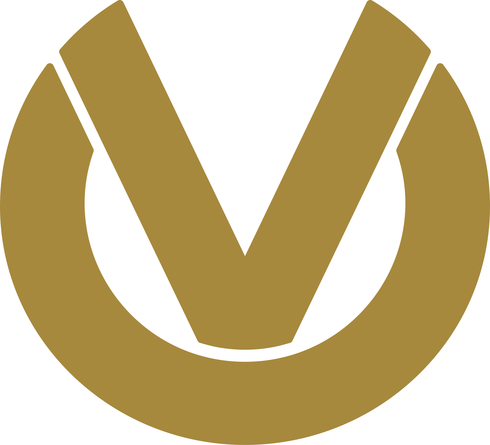

Aktuelles Projekt

2023 - Heute
Vertriebsplattform der Vermögensberater
Deutsche Vermögensberatung AG
Als IT Consultant verantworte ich die Backend-Architektur und Entwicklung kritischer Services für die Vertriebsplattform. Fokus auf skalierbare Microservices und Cloud-native Lösungen. Zusätzlich treibe ich die Prozessoptimierung voran durch Einführung und Moderation von Retrospektiven, Dailys und Refinements.
Rolle: Backend-Entwicklung, Architektur-Consulting & Scrum-Moderation
Java
Kotlin
Spring Boot
TypeScript
AWS